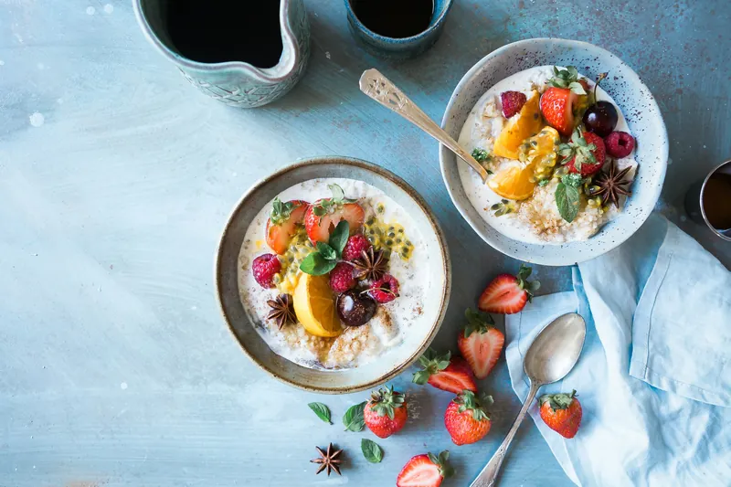

Recomendaciones previas al examen
Alimentación, descanso y manejo del estrés

- Duerme bien varios días antes, no solo la noche anterior. La Academia Americana de Medicina del Sueño recomienda que los adolescentes de 13 a 18 años duerman entre 8 y 10 horas cada 24 horas (Paruthi et al., 2016).
- Desvelarte para estudiar de último momento te quita más de lo que te da, porque el cansancio afecta la concentración y la memoria.
- Desayuna antes de cada sesión. Una revisión de estudios encontró que desayunar tiene efectos positivos en el desempeño en tareas que requieren atención y memoria, sobre todo en la mañana (Adolphus et al., 2013).
- Lleva agua y, si se permite, algo ligero para el receso.
- Para controlar los nervios, escribe durante unos minutos lo que te preocupa del examen antes de empezar. Ramirez y Beilock (2011) encontraron que esta técnica mejoró las calificaciones de estudiantes con ansiedad ante los exámenes.
- Respira despacio, inhalando por la nariz y exhalando lento, si sientes que te bloqueas durante el examen.
Preparación logística
- Confirma con tu escuela la fecha, la hora y la modalidad, física en aulas o digital desde casa.
- Ten listo tu pase de ingreso. Si lo pierdes, acude a servicios escolares (Ceneval, 2023).
- Prepara desde la noche anterior tu identificación, lápiz, goma, sacapuntas y una calculadora simple. No se permite ningún otro dispositivo electrónico.
- Si el examen es desde casa, revisa con anticipación tu computadora, tu conexión a internet y un lugar tranquilo sin interrupciones.
- Llega con tiempo. Llegar corriendo aumenta el estrés antes de empezar.
- Recuerda que debes presentar la Sesión 1 para poder presentar la Sesión 2.
Mi checklist para el día del examen
0 de 9 listos
Actitud y motivación
- Recuerda para qué sirve el examen. Es un diagnóstico que te muestra en qué estás bien y en qué necesitas mejorar antes de la universidad.
- Compárate contigo mismo, no con tus compañeros. Lo importante es saber cuánto avanzaste desde tu primer diagnóstico.
- Ponte metas pequeñas y concretas, como resolver 20 reactivos al día, en lugar de una meta vaga como "estudiar mucho".
- Si un reactivo no te sale, no dejes que afecte los siguientes. Cada pregunta vale lo mismo.